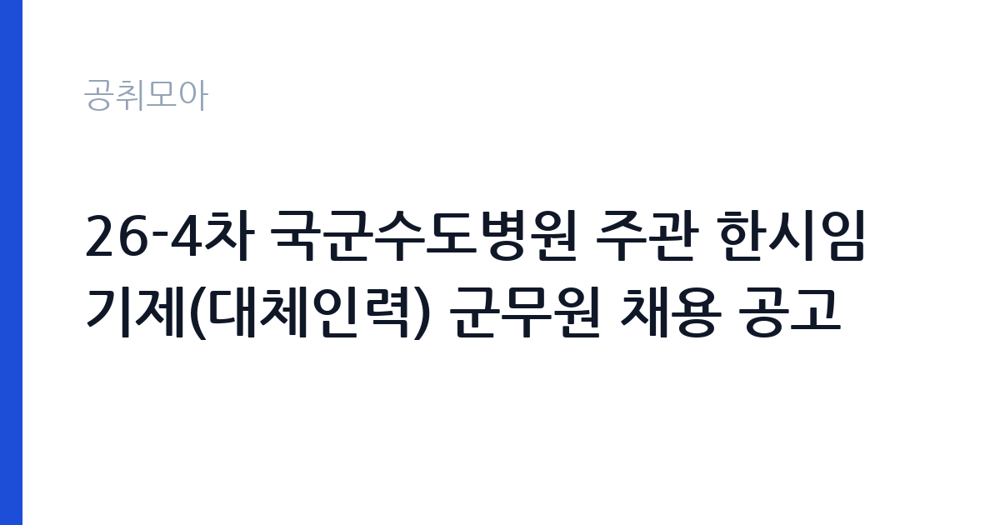

[국가기관] 26-4차 국군수도병원 주관 한시임기제(대체인력) 군무원 채용 공고
국방부 국군의무사령부 국군수도병원 · 경기 · 마감 2026-10-06 (D-14) · 출처 나라일터

한눈에 보는 모집 조건
| 기관 | 국방부 국군의무사령부 국군수도병원 |
|---|---|
| 공고명 | 26-4차 국군수도병원 주관 한시임기제(대체인력) 군무원 채용 공고 |
| 고용형태 | 임기제 |
| 근무지 | 경기 |
| 게시일 | 2026-09-22 |
| 마감일 | 2026-10-06 (D-14) |
지원자격, 이렇게 읽으세요
- 한시임기제 5호 1명 한시임기제 7호 7명 한시임기제 8호 3명 한시임기
- 접수 ~2026-10-06 마감
- 세부 조건은 원문 공고문 확인
채용 직위는 한시임기제 5호부터 9호까지 분야별로 다르며, 각 분야의 자격요건은 붙임 공고문에서 확인하셔야 합니다. 간호 분야는 간호사 면허가, 간호조무는 간호조무사 자격이, 방사선과 세포병리는 해당 면허가 필요합니다. 전산과 물자 분야는 관련 경력과 자격이 핵심이 됩니다. 대체인력 채용이므로 근무 기간의 조건을 원문에서 정확히 확인하시기 바랍니다.
이 공고의 포인트
첫 번째 포인트는 총 16명의 대규모 채용이라는 점입니다. 13개 분야에 걸쳐 있어 본인의 면허와 경력에 맞는 자리를 고를 수 있습니다. 두 번째로 국군수도병원은 군 의료의 최고 기관으로, 외상과 응급, 수술 분야의 실무를 집중적으로 경험할 수 있습니다. 세 번째로 일정이 명확해 서류 합격부터 임용까지의 계획을 세우기 쉽습니다. 의료·보건 면허 보유자에게 좋은 기회입니다.
전형은 어떻게 진행되나
채용 일정은 공고(9월 22일~10월 6일)와 원서접수(10월 1일~6일), 서류 합격자 발표(10월 26일), 신원조사 제출(10월 26일~28일), 면접(12월 첫째 주), 합격자 발표(12월 7일), 임용(다음 해 1월 1일) 순으로 진행됩니다. 접수 기간이 6일로 짧으니 공고 기간 중에 서류를 미리 준비하시기 바랍니다. 서류 합격자는 신원조사를 인터넷으로 제출해야 합니다.
원문에서 확인한 전형 방식
26-4차 국군수도병원 주관 한시임기제(대체인력) 군무원 채용 계획을 붙임과 같이 공고하오니 많은 지원 바랍니다. 1. 채용직위(채용예정인원 : 총 16명) - 외상수술간호담당(한시임기제 5호) 1명 - 수술간호담당(한시임기제 7호) 1명 - 마취간호담당(한시임기제 7호) 1명 - 정신건강간호담당(한시임기제 7호) 1명 - 간호조무담당(한시임기제 9호) 2명 - 간호담당(한시임기제 7호) 3명 - 간호담당(한시임기제 8호) 1명 - 방사선담당(한시임기제 9호) 1명 - 세포병리담당(한시임기제 8호) 1명 - 치위생팀장(한시임기제 7호) 1명 - 전산담당(한시임기제 8호) 1명 - 동원/치장물자담당(한시임기제 9호) 1명 - 응급구조담당(한시임기제 9호) 1명 2. 채용일정 o 공고기간 : \26. 9. 22.(화) ~ 10. 6.(화) / 15일간 o 원서접수 기간 : \26. 10. 1.(목) ~ 10. 6.(화) / 6일간 o 서류합격자 발표 : \26. 10. 26.(월) o 신원조사 제출(인터넷) : \26. 10. 26.(월) ~ 10. 28.(수) * 서류전형 합격자 대상 o 면접시험 : 2026년 12월 1째주 o 합격자 발표 : \26. 12.
이런 분께 추천해요
- 간호사와 간호조무사, 방사선사 등 의료 면허를 보유하신 분
- 군 의료기관에서 실무 경험을 쌓고 싶으신 분
- 대규모 채용의 기회를 활용해 군무원에 진출하고 싶으신 분
지원 전 체크리스트
- 지원 분야의 호수와 자격요건을 붙임 공고문에서 확인했습니다
- 원서 접수 기간 6일(10월 1일~6일)에 맞춰 서류를 준비했습니다
- 면허증과 경력증명서를 준비했습니다
- 임용일(다음 해 1월 1일)에 근무 가능한지 확인했습니다
모집 일정과 제출 타이밍
공고 기간은 9월 22일부터 10월 6일까지, 원서 접수는 10월 1일부터 10월 6일까지입니다. 서류 합격자 발표는 10월 26일, 면접은 12월 첫째 주, 합격자 발표는 12월 7일, 임용은 다음 해 1월 1일입니다. 장기 일정이므로 각 단계의 준비를 차근차근 하시기 바랍니다. 신원조사 제출 기간을 놓치지 않도록 주의하시기 바랍니다.
직무 이해하기: 국가기관
분야별로 외상수술간호와 수술·마취·정신건강간호, 병동 간호와 간호조무, 방사선 검사와 세포병리, 치위생과 전산, 물자 관리와 응급구조 등의 업무를 맡습니다. 국군수도병원은 경기 성남에 위치한 군 최고 수준의 의료기관으로, 국가기관 카테고리 공고입니다.
자기소개서 작성 팁
지원서류에서는 해당 분야의 면허와 실무 경험을 구체적으로 기술하시기 바랍니다. 근무했던 병원의 규모와 담당 업무, 응급 대응 경험을 수치와 함께 제시하면 좋습니다. 군 의료기관을 선택한 이유를 진정성 있게 서술하시기 바랍니다.
면접 준비 포인트
면접에서는 분야별 실무 지식과 군 조직 적응력을 질문받을 가능성이 큽니다. 대표 업무 프로세스를 단계별로 설명할 수 있도록 정리해 두시기 바랍니다. 대체인력의 근무 형태를 이해하고 있다는 점을 명확히 전달하시기 바랍니다.
급여·근무조건 읽는 법
보수 수준은 원문 공고문에서 확인하셔야 합니다. 한시임기제군무원의 봉급은 군무원보수 관련 규정에 따라 호수별 금액이 정해지며, 5호부터 9호까지 분야별로 다릅니다. 정확한 금액과 수당 구성은 붙임 공고문의 보수 조건에서 확인하시기 바랍니다.
자주 묻는 질문
- 모집 분야가 어떻게 됩니까
외상수술간호와 수술·마취·정신건강간호, 간호조무와 간호, 방사선과 세포병리, 치위생팀장과 전산, 물자와 응급구조 등 13개 분야 총 16명입니다. 분야별 호수와 자격은 붙임 공고문에서 확인하시기 바랍니다. - 임용 시기가 언제입니까
다음 해 1월 1일 임용 예정입니다. 면접은 12월 첫째 주, 합격자 발표는 12월 7일입니다. - 대체인력의 근무 기간은 어떻습니까
휴직 등의 사유로 결원이 생긴 기간 동안 근무하는 형태입니다. 정확한 근무 기간은 원문에서 확인하시기 바랍니다.
함께 보면 좋은 공고
[국가기관] 과학기술정보통신부 전문임기제 다급(과학기술 인력양성) 경력경쟁채용 재공고 — 마감 2026-10-06[국가기관] 육군교육사령부 한시임기제군무원(응급구조담당) 채용 — 마감 2026-10-06[국가기관] 2026년 제5회 식품의약품안전처 공무원(임기제) 경력경쟁채용시험 공고 — 마감 2026-10-06출처: 나라일터 공개정보를 바탕으로 공취모아가 정리한 안내글입니다. 모집 조건·일정은 변경될 수 있으니 지원 전 반드시 원문 공고문을 확인하세요. 본 글은 정보 제공용이며 합격을 보장하지 않습니다.